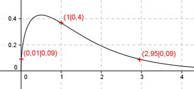

Aufgabe 112
Ergänzen Sie die Wertetabelle für den Graphen:
y = √x * e-x
x 1 0,01 oder 2,95
y 0,4 0,09
1
y = f(1) = √1 * e-1 = --- = 0,37 = 0,4 gerundet
e

An welchen Stellen x die Funktion den Wert 0,09
annimmt, ist elementar nicht zu ermitteln.
Abgelesen: Es sind 2 Stellen.
Zur Berechnung wendet man ein Näherungs-
verfahren an, hier die Regula falsi.
fx = 0,09 eingesetzt:
0,09 = √x * e-x
√x
0,09 = ---- | *ex
ex
0,09 * ex = √x | -0,09 * ex
√x - 0,09 * ex = 0
Als Funktion: y = √x - 0,09 * ex
Die Nullstellen dieser Funktion (y = 0)
entsprechen den gesuchten Werten für x.
 Abgelesen: Nullstellen zwischen 0 und 1 und
zwischen 2,5 und 3,5.
Regula falsi: x0 = gesuchte Nullstelle
x1 * |y(x2)| + x2 * |y(x1)|
x0 = ------------------------------
|y(x1)| + |y(x2)|
Nullstelle x0 zwischen 0 und 1 mit Excel ermittelt:
A B C D E F G H I J
0 1 0,7554 0,09 0 0,0900 0,0900 0,8454 0,1065 0,2262
0 0,1065 0,2262 0,09 0 0,0096 0,0096 0,3162 0,0303 0,0813
0 0,0303 0,0813 0,09 0 0,0027 0,0027 0,1713 0,0159 0,0347
0 0,0159 0,0347 0,09 0 0,0014 0,0014 0,1247 0,0115 0,0161
0 0,0115 0,0161 0,09 0 0,0010 0,0010 0,1061 0,0097 0,0078
Die gesuchte Nullstelle ergibt sich nach mehreren
Näherungen mit ausreichender Genauigkeit zu x01 = 0,01 gerundet.
Erläuterungen zur Tabelle siehe Aufgabe 101.
Die Nullstelle zwischen 2,5 und 3,5 ergibt sich nach
dem selben Verfahren zu x02 = 2,95 gerundet.
Abgelesen: Nullstellen zwischen 0 und 1 und
zwischen 2,5 und 3,5.
Regula falsi: x0 = gesuchte Nullstelle
x1 * |y(x2)| + x2 * |y(x1)|
x0 = ------------------------------
|y(x1)| + |y(x2)|
Nullstelle x0 zwischen 0 und 1 mit Excel ermittelt:
A B C D E F G H I J
0 1 0,7554 0,09 0 0,0900 0,0900 0,8454 0,1065 0,2262
0 0,1065 0,2262 0,09 0 0,0096 0,0096 0,3162 0,0303 0,0813
0 0,0303 0,0813 0,09 0 0,0027 0,0027 0,1713 0,0159 0,0347
0 0,0159 0,0347 0,09 0 0,0014 0,0014 0,1247 0,0115 0,0161
0 0,0115 0,0161 0,09 0 0,0010 0,0010 0,1061 0,0097 0,0078
Die gesuchte Nullstelle ergibt sich nach mehreren
Näherungen mit ausreichender Genauigkeit zu x01 = 0,01 gerundet.
Erläuterungen zur Tabelle siehe Aufgabe 101.
Die Nullstelle zwischen 2,5 und 3,5 ergibt sich nach
dem selben Verfahren zu x02 = 2,95 gerundet.